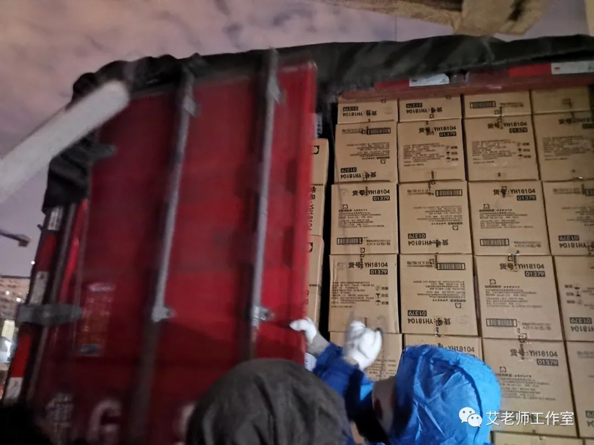
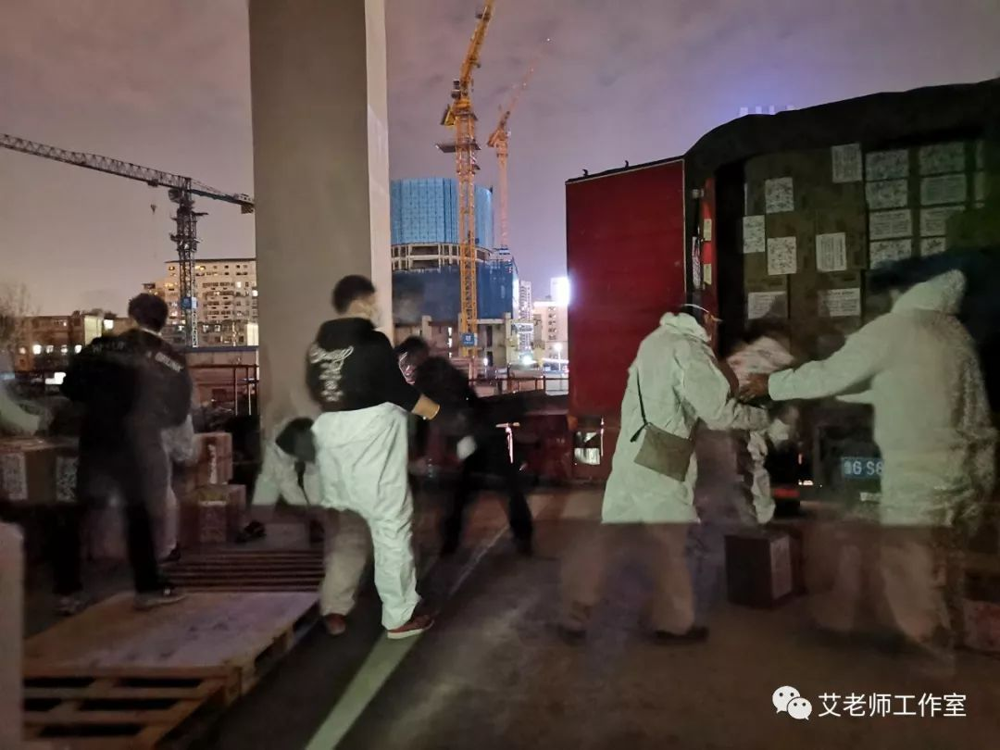
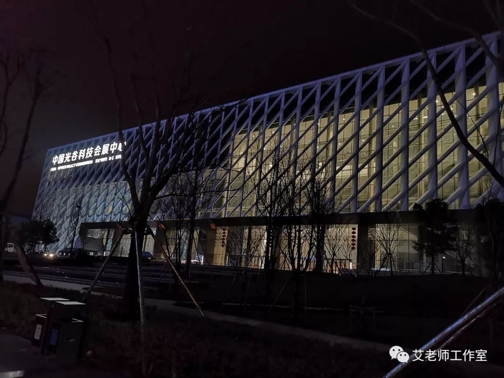
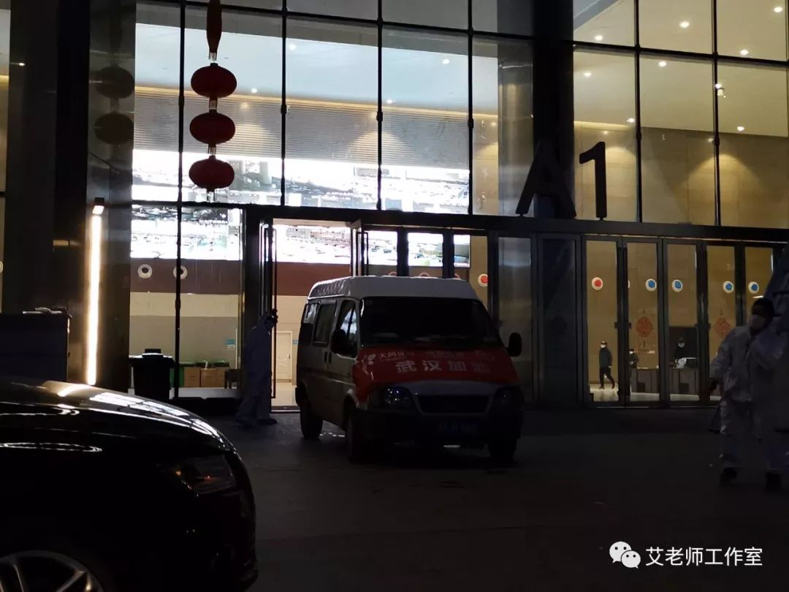

武汉封城后，我每天坐志愿者的车上下班
原文链接 备份链接 “ - 疫 情 之 下 - 武汉的疫情就像一簇紧簇的乌云，笼罩在每一个人的心头。但所幸，在这个受伤的城市中，在每台志愿者车里，在疲于奔波的路上，总有那么一群可爱的人，温暖着我们前线医护工作者的心。 ” 1 2020年 …
2月18日，下午六点半，天气也像戴了口罩，灰蒙不爽。七点后，小区依然处于武汉最严管制中，人车限行。因为有抗疫指挥部的放行证明，我们得以出了小区。

这天的工作是接收来自北京的一车物质：女性卫生用品。
根据一周前报道，截至2月11日，武汉有超过9万的医护人员奋战在疫情防控一线，至2月14日，来自全国的医疗界支援医护已近2万。在这些医生中，女性占多少比例
我没有统计，但是护士中百分之九十以上是女性。另外，在2月7日，“姐妹战疫安心行动”发起人梁钰的微博中说：目前在湖北一线女性医护人员起码超过10万人。按每月3天经期，每天换2片的最低配备标准，这些一线的女性医护人员每个月最起码需要60万片卫生巾。事实上女性经期应以一周左右来计算，而且不同年龄段以及不同体质，血流量也有不同——每天换两片，已经低于上个世纪六十年代的农村妇女农忙时期标准。
女性经期用品的缺口有几个原因，1、本地医护人员被紧急召回上岗，隔离工作，缺乏后援。2、武汉封城后市场停业，物品断供。3、外地医护人员驰援武汉，未及准备。
从《每日人物》对梁钰的报道中还可以看出几个问题，即使在发出呼吁后有了社会捐助，还有运送和接收困难，一方面，有院方男性负责人不认为这是迫切需要。另一方面，女性卫生用品不算医疗物质，不能享受绿色通道。但在相关报道发出后，“姐妹战疫安心行动”在微公益平台和为爱联合劝募平台（微信）开启公募连接，一天内筹得善款2百35万多。此后全国妇联所属中国妇女发展基金会这一国家级公益组织也募集了225万元，用于援助一线女性医务人员物品。
妖精，后来我看到她们捐赠的标牌，我推测是在北京金融街一代工作，假日健身酷跑的一群姑娘。她们的捐赠属于以上关爱医护姐妹公益同行这一波。武汉的志愿者团队今天晚上对口要接的就是她们组织采购的物质。
我们这个车进到物质配送工地，还不知道车头灯都跑掉了。一位在场的志愿者用透明胶帮助重新固定车灯。在场的许总告诉我，这二十来天里，这个工地上的志愿者为前线各医院配送了十五万套防护服和一百万只口罩。
这是志愿者自己装配的卸货车，下雨时就靠它从大型运输车上卸货。

晚上九点多，这台发自北京运输车终于到达：
司机来自山东，他说昨天晚上6点从北京出发，夜里在邢台休息。今天一大早连续赶路，开了十多个小时到达武汉。也是本地志愿者为他联系并发去本地区防疫指挥部的通行证，他才得以进入武汉市内。

志愿者们开始卸车，这车里有432箱女性卫生用品，分别为日用和夜用卫生巾和安全裤。一位小哥说，前几天去采买卫生巾，人家问要什么牌子的，他一下蒙了：我一辈子都没买过这东西！不知道牌子， 就选贵的买吧。另一位说要不要现在拆一件跟你合个影？

这个手机作为照明，大家开始卸货，十来个人，平均每人搬了四十多箱：

现在我也终于看清了妖精的真相：
卸货后，司机离开。他说今天他只吃了一餐饭。我说这么晚了，街上也没有地方卖吃的，怎么办？他说他车上还有泡面。
一家医院来车，取走了司机给医院带的80箱货。

志愿者协助装车：

院方和志愿者点数，签收：

这一车走了，忙碌了一天的人们结束工作。我们两个车拉了物质前往光谷会展中心，目前那里也是方舱医院。
开了半个多小时，到了这里。

大约晚上10点半了，看见一些医护人员出来，应该是换班回酒店休息的人。路边有公交车接送：

车停在方舱入口卸货，可以看见里面墙上的巨大视频，显示方舱内景象：


在大厅内一侧，有工作人员签收物质。

这位戴红色帽子的女性说，方舱内有维持秩序的工作人员。有人今天只吃了一餐饭，还有的人十来个小时没有喝水了，因为换身衣服不方便。我说您也没有穿防护服，她说她们毕竟不在一线，也要节约。
这是武汉的一个平静的夜晚，我把这些照片放在这里，希望北京的妖精们可以看到，她们的心意，我们送到了抗疫前线的一个角落。
2020年2月21日补记
原文链接 备份链接 “ - 疫 情 之 下 - 武汉的疫情就像一簇紧簇的乌云，笼罩在每一个人的心头。但所幸，在这个受伤的城市中，在每台志愿者车里，在疲于奔波的路上，总有那么一群可爱的人，温暖着我们前线医护工作者的心。 ” 1 2020年 …
原文链接 备份链接 除了菜品的装卸、运送外，我还要负责为各个医院不同的人群制定不同的菜谱。比如，护士群体需要增加抗疲劳的食材，专家组的菜品可略微清淡，而建筑工人的菜单，则需要大油大荤。 口述 | 石在余 整理 | 刘朝晖 昨晚到今天，我 …
原文链接 备份链接 ▲ 武汉骑手老计说：明天太阳会照常升起。（受访者供图） 经此一役，杨静、华浩、李大双、曹新志、胡启等人都明白了一个道理：这是一场“团战”，那些拯救人们于危难中的英雄，也需要被守护。在他们背后的支撑，是城市新基础设施在 …
原文链接 备份链接 ********** *****他们都希望，和这座城市的人们一起，用自己的方式向医护人员表示谢意。***** 武汉同济医院理发屋，志愿者在剪刀上喷洒酒精。受访者供图 文 | 新京报记者 张惠兰 编辑｜王婧祎 校对 | …
原文链接 备份链接 文/六筒 李岩半年前刚去过武汉，和家人去旅游，主要想看看黄鹤楼。那还是夏天，热气蒸得人头上冒烟。高温挡不住蜂拥的游客，摩肩接踵，拥塞的车辆在大道上艰难挪动。“真是个大都市”，她想。 李岩是河北医科大学第二医院呼吸与危重 …